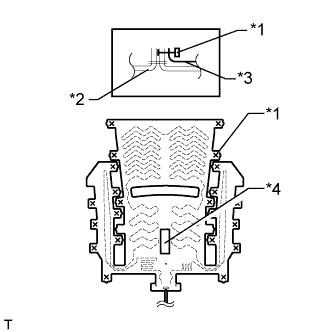
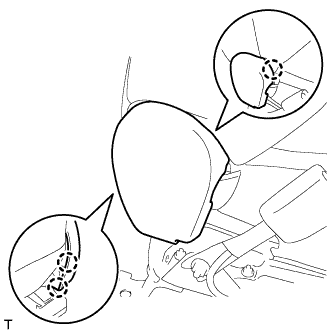

ПЕРЕДНЕЕ СИДЕНЬЕ В СБОРЕ (с электроприводом) > ПОВТОРНАЯ СБОРКА |
| 1. УСТАНОВИТЕ ЖГУТ ЭЛЕКТРОПРОВОДКИ СИДЕНЬЯ № 2 |
Введите в зацепление 2 зажима, чтобы закрепить жгут электропроводки сиденья.
Со стороны водителя:
Подсоедините 2 разъема.
Со стороны переднего пассажира:
Подсоедините разъем.
| 2. УСТАНОВИТЕ ПОДУШКУ СПИНКИ ПЕРЕДНЕГО РАЗДЕЛЬНОГО СИДЕНЬЯ |
Установите подушку спинки сиденья.
| 3. УСТАНОВИТЕ ПОДОГРЕВАТЕЛЬ СПИНКИ ЛЕВОГО ПЕРЕДНЕГО СИДЕНЬЯ В СБОРЕ (для моделей с системой подогрева сидений) |
Установите подогреватель спинки сиденья, обратив сторону со штампом наименования к обивке спинки сиденья.
| *1 | Стяжка |
| *2 | Обивка спинки сиденья |
| *3 | Подогреватель спинки сиденья |
| *4 | Штамп наименования |
Закрепите подогреватель спинки сиденья новыми закрепками.
| 4. УСТАНОВИТЕ ОБИВКУ СПИНКИ РАЗДЕЛЬНОГО ПЕРЕДНЕГО СИДЕНЬЯ |
Установите обивку на подушку спинки сиденья и закрепите ее новыми витковыми пружинами, используя щипцы для витковых пружин.
| *1 | Щипцы для витковых пружин |
Введите в зацепление 4 захвата, чтобы установить 2 держателя подголовника.
Для моделей с боковой подушкой безопасности переднего сиденья:
Подсоедините держатель обивки спинки сиденья к подушке спинки сиденья.
Установите держатель обивки спинки сиденья на раму сиденья и закрепите гайкой.
Закройте 2 крепления, а затем закройте обивку спинки сиденья.

| *A | для сиденья с тканевой обивкой | *B | для сиденья с кожаной обивкой |
С помощью щипцов для витковых пружин установите 3 новые витковые пружины.
| *1 | Щипцы для витковых пружин |
| 5. УСТАНОВИТЕ ЛЕВУЮ ВНУТРЕННЮЮ КРЫШКУ РЕГУЛЯТОРА НАКЛОНА |
Введите в зацепление направляющую, чтобы установить накладку.
| 6. УСТАНОВИТЕ ПРАВУЮ ВНУТРЕННЮЮ КРЫШКУ РЕГУЛЯТОРА НАКЛОНА |
Введите в зацепление направляющую, чтобы установить накладку.
| 7. УСТАНОВИТЕ ЖГУТ ЭЛЕКТРОПРОВОДКИ ЛЕВОГО ПЕРЕДНЕГО СИДЕНЬЯ |
Установите жгут электропроводки сиденья.
| 8. УСТАНОВИТЕ БЛОК УПРАВЛЕНИЯ ПОДОГРЕВАТЕЛЕМ ЛЕВОГО СИДЕНЬЯ В СБОРЕ (с системой подогрева сидений) |
Введите в зацепление 2 зажима, чтобы закрепить блок управления подогревателем сиденья.
Подсоедините разъем.
| 9. УСТАНОВИТЕ КРАЕВОЕ УКРЕПЛЕНИЕ ПОДУШКИ ЛЕВОГО ПЕРЕДНЕГО СИДЕНЬЯ |
 |
Переместите защитный элемент в направлении, указанном на рисунке стрелкой, чтобы присоединить крепление и установить защитный элемент.
Вверните винт.
| 10. УСТАНОВИТЕ КРАЕВОЕ УКРЕПЛЕНИЕ ПОДУШКИ ПРАВОГО ПЕРЕДНЕГО СИДЕНЬЯ |
| 11. УСТАНОВИТЕ ЛЕВЫЙ НИЖНИЙ ЗАЩИТНЫЙ ЩИТОК ПОДУШКИ ПЕРЕДНЕГО СИДЕНЬЯ |
Введите в зацепление крепление и фиксатор, чтобы закрепить защитный щиток подушки.
Заверните винт.
| 12. УСТАНОВИТЕ ПРАВЫЙ НИЖНИЙ ЗАЩИТНЫЙ ЩИТОК ПОДУШКИ ПЕРЕДНЕГО СИДЕНЬЯ |
Введите в зацепление крепление и фиксатор, чтобы закрепить защитный щиток подушки.
Вверните винт.
| 13. УСТАНОВИТЕ ЛЕВУЮ ВНУТРЕННЮЮ КРЫШКУ РЕГУЛЯТОРА НАКЛОНА |
Введите в зацепление захват и направляющую, чтобы установить накладку.
| 14. УСТАНОВИТЕ ПОДОГРЕВАТЕЛЬ ПОДУШКИ ЛЕВОГО ПЕРЕДНЕГО СИДЕНЬЯ В СБОРЕ (для моделей с системой подогрева сидений) |
|  |
Установите подогреватель подушки сиденья, обратив сторону со штампом наименования к обивке подушки сиденья.
| *1 | Стяжка |
| *2 | Обивка спинки сиденья |
| *3 | Подогреватель спинки сиденья |
| *4 | Штамп наименования |
Закрепите подогреватель подушки сиденья новыми закрепками.
| 15. УСТАНОВИТЕ ОБИВКУ ПОДУШКИ РАЗДЕЛЬНОГО ПЕРЕДНЕГО СИДЕНЬЯ |
 |
Установите обивку подушки сиденья на подушку сиденья и закрепите ее новыми витковыми пружинами, используя щипцы для витковых пружин.
| *1 | Щипцы для витковых пружин |
| 16. УСТАНОВИТЕ ОБИВКУ ПОДУШКИ СИДЕНЬЯ ВМЕСТЕ С ПОДУШКОЙ |
Установите обивку подушки сиденья вместе с подушкой.
Со стороны переднего пассажира:
Введите в зацепление захват, чтобы подсоединить разъем.
Для моделей с системой подогрева сидений:
Подсоедините разъем подогревателя сиденья и подсоедините 3 зажима жгута проводов.
Введите в зацепление крепления.
| 17. УСТАНОВИТЕ НАКЛАДКУ НОЖЕК ЛЕВОГО ПЕРЕДНЕГО СИДЕНЬЯ |
 |
Переместите накладку в направлении, указанном на рисунке стрелкой, чтобы закрепить ее.
Введите в зацепление 2 захвата.
| 18. УСТАНОВИТЕ КОЛПАЧОК |
Установите 2 крышки.
| 19. УСТАНОВИТЕ СПИНКУ РАЗДЕЛЬНОГО ПЕРЕДНЕГО СИДЕНЬЯ В СБОРЕ |
Закрепите спинку сиденья в сборе 4 болтами.
Для моделей с боковой подушкой безопасности переднего сиденья:
Подсоедините жгут проводов подушки безопасности.
Установите крепежную ленту, чтобы закрыть обивку.
Присоедините 3 зажима жгута проводов подушки безопасности.
Введите в зацепление захват, чтобы подсоединить разъем подушки безопасности.
Введите в зацепление 2 крюка.
Введите в зацепление зажим, чтобы подсоединить жгут электропроводки сиденья № 2.
Для моделей с системой подогрева сидений:
Подсоедините разъем подогревателя сиденья и закрепите зажим жгута проводов.
Установите резиновую ленту на пружину подушки сиденья.
| 20. УСТАНОВИТЕ ЗАМОК РЕМНЯ БЕЗОПАСНОСТИ ЛЕВОГО ПЕРЕДНЕГО СИДЕНЬЯ В СБОРЕ |
 |
Установите замок ремня безопасности переднего сиденья и закрепите его гайкой.
| *a | Выступающая часть |
Со стороны водителя:
Подсоедините разъем и закрепите 4 зажима.
Со стороны переднего пассажира:
Подсоедините 2 разъема и 3 зажима.
| 21. УСТАНОВИТЕ ВНУТРЕННИЙ ЗАЩИТНЫЙ ЩИТОК ПОДУШКИ ЛЕВОГО ПЕРЕДНЕГО СИДЕНЬЯ |
|  |
Введите в зацепление 3 захвата, чтобы установить защитный щиток подушки.
| 22. УСТАНОВИТЕ ВНУТРЕННИЙ ЗАЩИТНЫЙ ЩИТОК ПОДУШКИ ПРАВОГО ПЕРЕДНЕГО СИДЕНЬЯ (со стороны переднего пассажира) |
Введите в зацепление 4 захвата, чтобы установить защитный щиток подушки.
| 23. УСТАНОВИТЕ ВНУТРЕННИЙ ЗАЩИТНЫЙ ЩИТОК № 1 ПОДУШКИ ЛЕВОГО ПЕРЕДНЕГО СИДЕНЬЯ |
Введите в зацепление 2 захвата, чтобы установить защитный щиток подушки.
| 24. УСТАНОВИТЕ ПЕРЕКЛЮЧАТЕЛЬ ЭЛЕКТРОПРИВОДА ОПОРЫ ПОЯСНИЦЫ В СБОРЕ (со стороны водителя) |
Подсоедините разъем переключателя опоры поясницы.
Введите в зацепление 2 захвата, чтобы закрепить переключатель электропривода опоры поясницы.
| 25. УСТАНОВИТЕ ПЕРЕКЛЮЧАТЕЛЬ ЭЛЕКТРОПРИВОДА ЛЕВОГО ПЕРЕДНЕГО СИДЕНЬЯ |
для моделей с запоминающими устройствами сидений:
Подсоедините 2 разъема переключателя электропривода сиденья.
для моделей без запоминающих устройств сидений:
Подсоедините разъем переключателя электропривода сиденья.
Установите переключатель электропривода сиденья и закрепите его 3 винтами.
| 26. УСТАНОВИТЕ ЗАЩИТНЫЙ ЩИТОК ПОДУШКИ ЛЕВОГО ПЕРЕДНЕГО СИДЕНЬЯ |
Присоедините 3 зажима жгута проводов и подсоедините разъем жгута электропроводки сиденья.
Введите в зацепление 3 захвата, чтобы закрыть крышку жгута проводов.
Освободите фиксатор, присоединенный к пружине подушки сиденья, и установите его на защитный щиток подушки.

Присоедините 2 фиксатора, 3 захвата и направляющую.
Присоедините направляющую внутреннего защитного щитка подушки переднего сиденья № 1 и вверните винт.
Подсоедините разъем электродвигателя подъема.
| 27. УСТАНОВИТЕ РУЧКУ ПЕРЕКЛЮЧАТЕЛЯ ЭЛЕКТРОПРИВОДА НАКЛОНА СИДЕНЬЯ |
 |
Введите в зацепление 2 захвата, чтобы закрепить ручку.
| 28. УСТАНОВИТЕ РУЧКУ ПЕРЕКЛЮЧАТЕЛЯ ЭЛЕКТРОПРИВОДА ПЕРЕМЕЩЕНИЯ СИДЕНЬЯ ПО НАПРАВЛЯЮЩИМ И ПО ВЕРТИКАЛИ |
 |
Введите в зацепление 2 захвата, чтобы закрепить ручку.